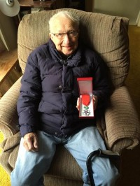
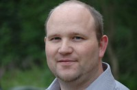

Lovise og Håkon sin slekt og familie
Lovise f. Eggan og Håkon Wahl
Personside 24
Lorraine Irvine
K, #576, f. 4 juli 1944, d. før 2020
Foreldre
| Far | James McGregor Irvine (f. 23 april 1919, d. 31 mai 2000) |
| Mor | Oddny Bodil Sandhals (f. 11 april 1920, d. 25 juli 1993) |
Familie: Reginald Howard Dempster
| Datter | Shannon Dempster+ |
| Sønn | Reginald David Dempster |
| Sønn | Aaron James Dempster |
Biografi
Lorraine Irvine ble født den 4 juli 1944 Prince Rupert, Skeena-Queen Charlotte, British Columbia, Canada. Hun giftet seg med Reginald Howard Dempster den 1 august 1963. Hun døde før 2020.
Lorraine Irvine was also known as Lorraine Dempster. Hun og James Stewart Irvine. led av Huntingtons sykdom - som er en arvelig, alvorlig form for fremadskridende hjernesvinn som opptrer i voksen alder. Hun bodde på/i Terrace, Kitimat-Stikine, British Columbia, Canada.
| Sist redigert | 20 juli 2022 21:11:15 |
| Slektskap | 3-menning til Håkon Wahl |
James Stewart Irvine
M, #577, f. 1 januar 1948, d. 10 januar 2015
Foreldre
| Far | James McGregor Irvine (f. 23 april 1919, d. 31 mai 2000) |
| Mor | Oddny Bodil Sandhals (f. 11 april 1920, d. 25 juli 1993) |
Familie: Chris Pitzof
| Sønn | James Glen Irvine |
| Datter | Michelle Allison Irvine |
Biografi
James Stewart Irvine ble født den 1 januar 1948 Prince Rupert, Skeena-Queen Charlotte, British Columbia, Canada. Han giftet seg med Chris Pitzof den 9 februar 1996. Han og Chris Pitzof ble skilt. Han døde den 10 januar 2015.
| Sist redigert | 4 februar 2015 00:00:00 |
| Slektskap | 3-menning til Håkon Wahl |
Vidar Asbjørn Sandhals
M, #578, f. 5 april 1922, d. 4 januar 2016
Foreldre
| Far | Johan Jentoft Sandhals (f. 1 februar 1885, d. 21 juli 1957) |
| Mor | Ingrid Hansen (f. 17 juli 1892, d. 16 mai 1973) |
Familie: Jean Josephine Jordan (f. 1 juni 1931, d. 20 oktober 2020)
| Datter | Randy Lynne Harrison+ |
| Sønn | John Vidar Sandhals+ |
| Datter | Samantha Lee Sandhals+ |
{kind=link}

Vidar Sandhals med medalje
Biografi
Vidar Asbjørn Sandhals ble født den 5 april 1922 Sandhals 27/22, Lauga, Nærøy, Nord-Trøndelag. Han giftet seg med Jean Josephine Jordan den 5 august 1952 på/i Prince Rupert, Skeena-Queen Charlotte, British Columbia, Canada. Han døde på sykehuset den 4 januar 2016.
Vidar Asbjørn Sandhals was also known as Widar Asbourn Sandhals. Han ble døpt den 6 mai 1922 på/i Steine kapell, Nærøy, Nord-Trøndelag. Han emigrerte til Canada den 22 mai 1924 sammen med Johan Jentoft Sandhals, Ingrid Hansen, Arvid Jørund Sandhals, Haldis Sandhals, og Oddny Bodil Sandhals. Vidar Asbjørn Sandhals. tjenestegjorde i Tyskland under 2dre verdenskrig. Han bodde i 1985 på/i McBride, Lakelse Lake, Kitimat-Stikine, British Columbia, Canada. Han. ble for sin innsats under frigjøringen av Frankrike tildelt Knight of the French National Order of the Legion of Honour. Dette er den høyste orden som gis av Frankrike.
| Sist redigert | 20 august 2024 21:06:31 |
| Slektskap | Søskenbarn 1 gang forskjøvet til Håkon Wahl |
Iva Judith Sandhals
K, #579, f. 16 august 1924, d. juli 1989
Foreldre
| Far | Johan Jentoft Sandhals (f. 1 februar 1885, d. 21 juli 1957) |
| Mor | Ingrid Hansen (f. 17 juli 1892, d. 16 mai 1973) |
Familie: Peter Husoy
| Sønn | Keith Husoy+ |
| Datter | Judith Husoy |
Biografi
Iva Judith Sandhals ble født den 16 august 1924 Canada. Hun giftet seg med Peter Husoy. Hun døde i juli 1989 på/i Canada.
Iva Judith Sandhals was also known as Iva Judith Husoy.
| Sist redigert | 27 mai 2010 00:00:00 |
| Slektskap | Søskenbarn 1 gang forskjøvet til Håkon Wahl |
Edna Marion Sandhals
K, #583, f. 31 desember 1926, d. 29 mars 2009
Foreldre
| Far | Johan Jentoft Sandhals (f. 1 februar 1885, d. 21 juli 1957) |
| Mor | Ingrid Hansen (f. 17 juli 1892, d. 16 mai 1973) |
Biografi
Edna Marion Sandhals ble født den 31 desember 1926 Prince Rupert, Skeena-Queen Charlotte, British Columbia, Canada. Hun giftet seg med Thomas Darron Mosley på/i Three Hills, Alberta, Canada. Hun døde den 29 mars 2009 på/i Canada. Hun ble gravlagt den 24 mai 2010 på/i Prince Rupert, Skeena-Queen Charlotte, British Columbia, Canada.
Edna Marion Sandhals was also known as Edna Marion Mosley. Hun bodde på/i Three Hills, Alberta, Canada.
| Sist redigert | 6 juni 2010 00:00:00 |
| Slektskap | Søskenbarn 1 gang forskjøvet til Håkon Wahl |
Leif Roald Sandhals
M, #584, f. 4 september 1930, d. 5 september 2006
Foreldre
| Far | Johan Jentoft Sandhals (f. 1 februar 1885, d. 21 juli 1957) |
| Mor | Ingrid Hansen (f. 17 juli 1892, d. 16 mai 1973) |
Familie: Corene Gale (f. 21 september 1927, d. 5 januar 2006)
| Datter | Donna Corene Sandhals+ |
| Datter | Diane Gale Sandhals+ |
| Sønn | Ricky Leif Sandhals |
Biografi
Leif Roald Sandhals ble født den 4 september 1930 Prince Rupert, Skeena-Queen Charlotte, British Columbia, Canada. Han giftet seg med Corene Gale. Han døde den 5 september 2006 på/i Vancouver, British Columbia, Canada.
Leif Roald Sandhals fikk. Parkinson. Parkinson.
| Sist redigert | 28 september 2022 09:45:13 |
| Slektskap | Søskenbarn 1 gang forskjøvet til Håkon Wahl |
Inge Kristian Kristiansen
M, #589, f. 10 april 1977, d. 9 mars 2026
Foreldre
| Far | Kjell Einar Kristiansen |
| Mor | Reidun Elisabeth Hansen |
Familie 1: Beate Grande Karlsen
| Datter | Silje Jeanette Kristiansen |
Familie 2: Susanne Øye
| Datter | Oda Marie Kristiansen |
{kind=link}

Inge Kristian Kristiansen
Biografi
Inge Kristian Kristiansen ble født den 10 april 1977 Nærøy, Nord-Trøndelag. Han ble samboer med Susanne Øye. Han døde den 9 mars 2026 på/i Stavanger universitetssykehus, Stavanger, Rogaland.
Inge Kristian Kristiansen bodde på/i Stavanger, Rogaland. Han. ble i ungdommen operert for kreft. Inngrepet gjorde at han fikk noe begrenset bevegelighet i halsen og påfølgende plager. I 40-års alderen fikk han på ny påvist kreft. Det ble flere inngrep og behandlinger. I 2025 var livsutsiktene svært små. Et håp var å kunne få behandling i Israel. Han bodde på/i Sandnes, Rogaland.
Kort før Inge gikk bort skrev han dette sterke innlegget på sin Facebook-side:
Jeg har sagt jeg skal dele alt, gode og dårlige nyheter. I dag gikk vi over i siste fase av denne reisen. Smertene øker og kvalmen er vanskelig å bli kvitt. Heldigvis er legene gode og vi er godt på vei mot en smertefri kvalitetstid på slutten av livet. Svulstene vokser, alle sammen. Det er mer blod i buken, så det er trangt. Magen er skvist i et hjørne, så matinntak er vanskelig. Jeg har vann på lungene og de er delvis kollapset. Vi skjønner alle hvor det bærer. Legene vet ikke om det er 3 dager eller 3 uker. Så vi gjør som vi alltid har gjort i Øye Kristiansen familien. Vi gjør det beste ut av hver dag og koser oss. Ingen grunn til å være bitter og lei, når man har en sånn fin familie. Silje Jeanette, Oda Marie og Susanne tusen takk for en fantastisk reise. Han ble bisatt den 20 mars 2026 Soma kapell, Sandnes, Rogaland.
Kort før Inge gikk bort skrev han dette sterke innlegget på sin Facebook-side:
Jeg har sagt jeg skal dele alt, gode og dårlige nyheter. I dag gikk vi over i siste fase av denne reisen. Smertene øker og kvalmen er vanskelig å bli kvitt. Heldigvis er legene gode og vi er godt på vei mot en smertefri kvalitetstid på slutten av livet. Svulstene vokser, alle sammen. Det er mer blod i buken, så det er trangt. Magen er skvist i et hjørne, så matinntak er vanskelig. Jeg har vann på lungene og de er delvis kollapset. Vi skjønner alle hvor det bærer. Legene vet ikke om det er 3 dager eller 3 uker. Så vi gjør som vi alltid har gjort i Øye Kristiansen familien. Vi gjør det beste ut av hver dag og koser oss. Ingen grunn til å være bitter og lei, når man har en sånn fin familie. Silje Jeanette, Oda Marie og Susanne tusen takk for en fantastisk reise. Han ble bisatt den 20 mars 2026 Soma kapell, Sandnes, Rogaland.
| Sist redigert | 29 juni 2026 11:46:58 |
| Slektskap | Søskenbarn 1 gang forskjøvet til Håkon Wahl 7-menning 3 ganger forskjøvet til Lovise Julie Eggan |
Einar Andreas Hansen
M, #593, f. 28 januar 1989, d. 9 juli 2008
Foreldre
| Far | Tor Jonny Hansen |
| Mor | Linda Anita Johnsen |
Biografi
Einar Andreas Hansen ble født den 28 januar 1989 Namdal sykehus, Namsos, Nord-Trøndelag. Han døde av kreft den 9 juli 2008 på/i St. Olavs hospital, Trondheim, Sør-Trøndelag. Han ble gravlagt den 17 juli 2008 på/i Steine kirke, Nærøy, Nord-Trøndelag.
Einar Andreas Hansen var utdannet ved i mekaniske fag på/i Ytre Namdal vgs, Rørvik, Vikna, Nord-Trøndelag.
| Sist redigert | 31 august 2022 00:23:12 |
| Slektskap | Søskenbarn 1 gang forskjøvet til Håkon Wahl |
Marit Olsdatter Krokstad
K, #595
| Referanser | Håkon sine forfedre |
Foreldre
| Far | Ola Andersson Krokstad (f. 1681, d. 1756) |
| Mor | Kari Haldorsdatter Mellingseter (f. 1690, d. 1780) |
Familie: Jakob Ivarson Moan Nordtømme (f. 1724, d. 1779)
| Sønn | Ole Jacobsen Mæhlum+ (f. 1757, d. 28 april 1826) |
Biografi
Marit Olsdatter Krokstad ble født Skaun, Sør-Trøndelag. Hun giftet seg med Jakob Ivarson Moan Nordtømme i 1748. Hun døde på/i Orkdal, Sør-Trøndelag.
Marit Olsdatter Krokstad was also known as Marit Nordtømme. Hun had reference number 35042.
| Sist redigert | 9 august 2011 00:00:00 |
| Slektskap | 4. tippoldemor til Håkon Wahl |
Jan Hybert Guldahl
M, #597, f. 16 januar 1944, d. 23 juli 2020
Foreldre
| Far | Nils Ivar Guldahl (f. 13 september 1921, d. 22 juli 1994) |
| Mor | Eva Andreassen Bue (f. 13 mars 1922) |
Biografi
Jan Hybert Guldahl ble født den 16 januar 1944 Oslo. Han døde den 23 juli 2020.
| Sist redigert | 31 juli 2020 00:00:00 |